MOTHERLAND
MOTHERLANDGarment Wash
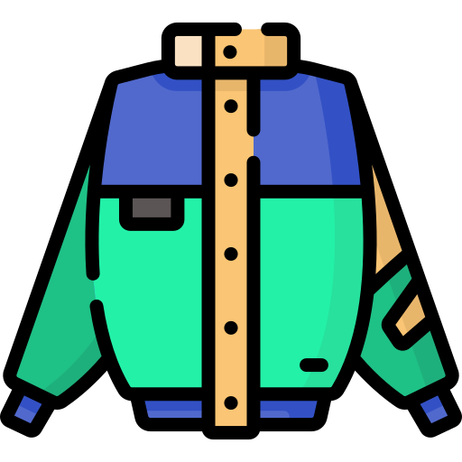
Fulfils the basic requirement of preshrinking the garment to arrest further shrinkage during home laundering.
Adding value to apparel since 1995. Multiple locations at Magadi Road, Peenya, Harohalli and Chennai, with an exclusive denim washing unit at Peenya.
WHAT A WASH DOES
Every effect on a finished pair of jeans is put there on purpose, in a machine, by us. Drag the handle to take the indigo down.
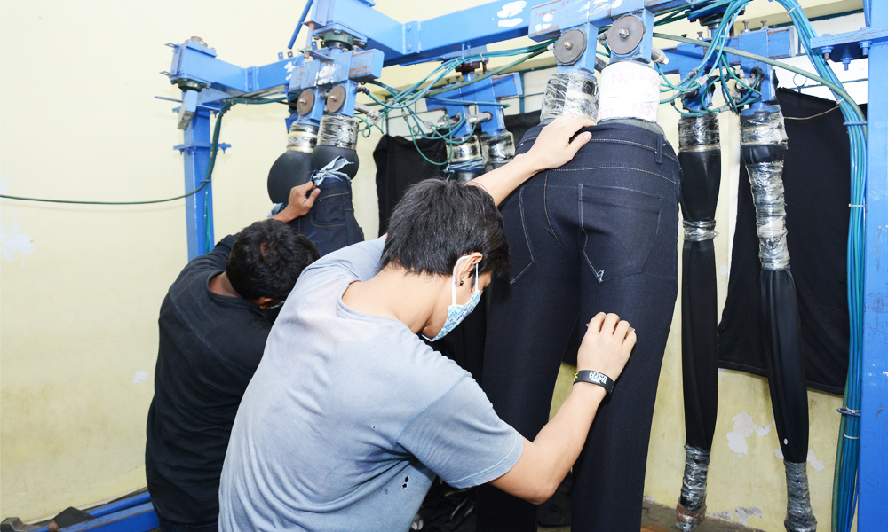
THE CATALOGUE
We carry out different washes based on customer requirements. These are the ones we are asked for most.

Fulfils the basic requirement of preshrinking the garment to arrest further shrinkage during home laundering.
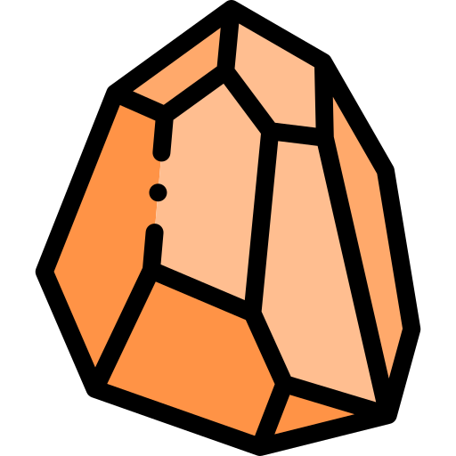
Pronounced puckered effect on the seams, body breakage and a vintage look — preferably for heavier fabrics.
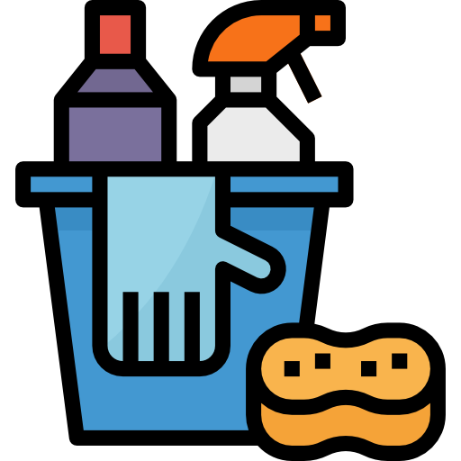
Gives a puckered look on the seams, and enhances the brightness and body breakage.
Multiple levels of washed-down effect with a grainy body and high-contrast puckering on the seams, for all types of dyed fabrics.
Garments are washed with emery, rubber, plastic and silicone-coated balls to give myriad finishes.
Delicate lightweight garments that need a stone wash effect are washed with perlite powder in place of pumice stones, to avoid damage.
Peaching or sueding is a mechanical finish done on fabrics — the same effect is replicated in garment form by chemical treatment.
Enhances the touch and feel of the garment.
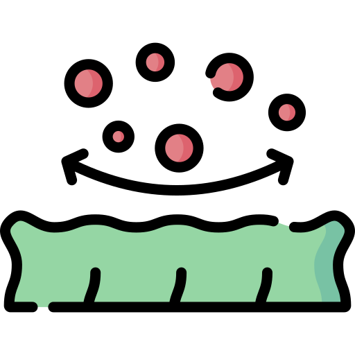
Gives antiviral characteristics to the garment and helps combat many virus strains, including Covid-19.
Imparts antimicrobial properties that inhibit the growth of odour-causing bacteria and disease-causing germs.
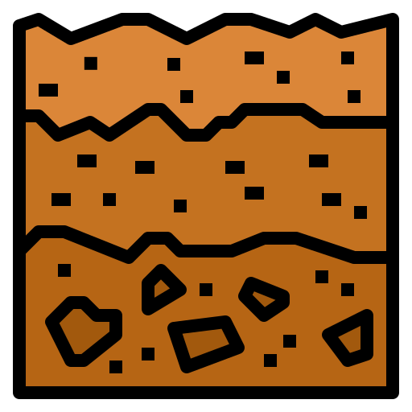
Helps keep fabrics cool by up to 3°C when in contact with sweat or moisture.
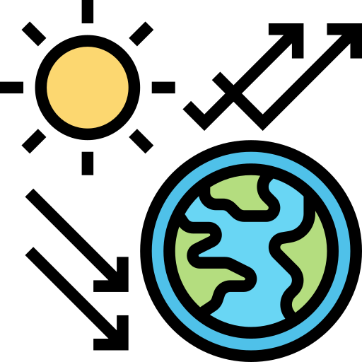
Overexposure to invisible UV radiation leads to sunburn, accelerated skin ageing and skin cancer. Treated garments protect against it — especially needed for fair, sun-sensitive skin, children, and people who spend long hours outdoors.
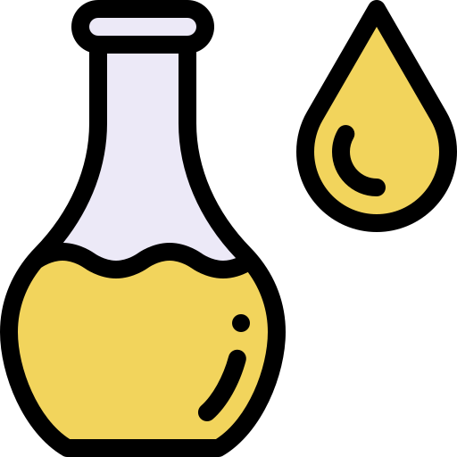
Cotton has a higher surface tension than oil and water, so liquids soak in. This finish lowers the fabric’s surface tension below that of the liquids — so the garment repels both.
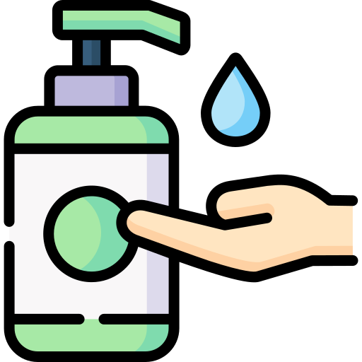
Garments worn next to the skin transport sweat away and evaporate it quickly. They stay dry, don’t cling, feel cooler, and the fabric breathes better.
Any kind of back staining on denims and indigos can be removed post-wash.
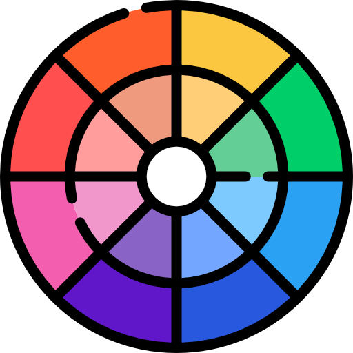
Fastness parameters — colour fastness to washing, crocking and light — are improved with this wash.
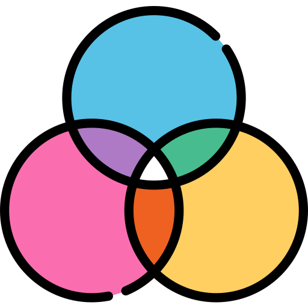
Dark colours like blacks and navies are made deeper and brighter by this process.
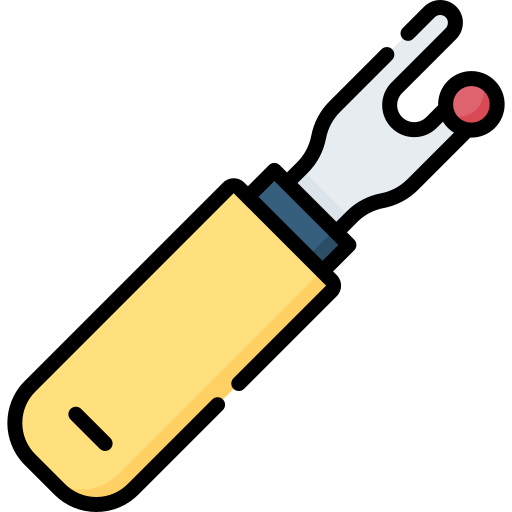
In some garments seams slip at the slightest force. A special auxiliary corrects it and increases strength at the same time.
Reduces pilling on fabrics and knits made from synthetic-content yarns, by suppressing the fibres’ ability to slacken and lowering their mechanical resistance.
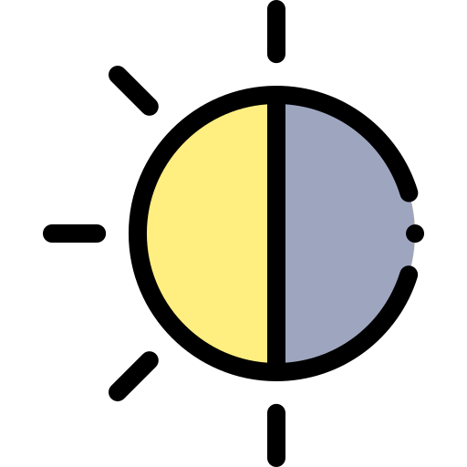
Makes whites brighter by absorbing invisible ultraviolet light and re-emitting it as visible light in the blue range of the spectrum.
TECHNOLOGY
The depletion of natural resources affects every one of us. We are committed to doing our bit in changing how we use the planet’s fast-depleting resources — especially water. For sustainable technology in garment finishing and washing we work with the award-winning team at Jeanologia from Spain.
Jeanologia Corporative · Spain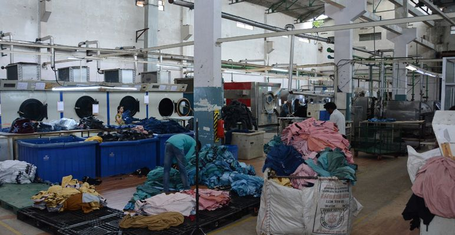
OUR CLIENTS
WHAT THEY SAY
The people who send us their samples and their bulk.
Motherland have a separate R&D team and very nice wash effects by them, and innovative techniques. We would like to explore more with Motherland.

Really, I’m going to have to leave “awesome” on every order. I’d like to thank all the staff at Motherland Garments for their help — from the owner to customer service, sales, shipping and receiving. Great products. My clients love them.
We are happy with the samples — they came out good enough as per the originals, and we got them within the targeted date.
We came to know about Motherland Laundry of Bangalore through a reliable source. We were looking for a good laundry in Bangalore and found it in Motherland. They are very prompt in their pick-up and delivery commitments, with a sincere, hardworking and dedicated team. All the best to your team going forward.
Motherland R&D new development samples are simply splendid, especially the SQUMA effect. These days designers look forward to innovative and SQUMA contrast looks in denim.
Tell us the garment, the fabric and the look you are after.